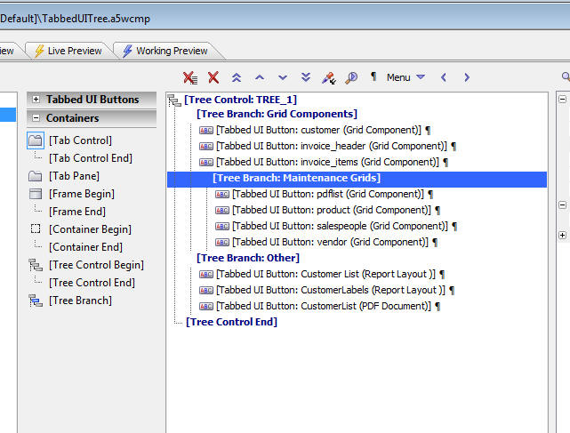

Tabbed UI Component - Tree Control
You can now organize the buttons in a Tabbed UI control into a tree control, as shown in the image below.To insert a tree control in the TabbedUI, you use the new Tree Control container type, as shown below.
Notice that there are 3 new items in the Containers list, [Tree Control Begin], [Tree Control End] and [Tree Branch]. The [Tree Branch] does not have a [Tree Branch End] control because Alpha Five can automatically infer when a tree branch ends.

The image above shows how the tree control in the previous image was designed.
When an item that is inside a tree control is selected, two new icons on the toolbar are displayed:
The two right most buttons are to 'promote' and 'demote' an entry in the tree.
Tree Branch and Leaf Properties
For a tree leaf, you can specify an optional icon. By default, the icon is set to <Auto>, which causes Alpha Five to display an icon for the corresponding object type. So, if the button opens a Grid component, an icon for a Grid will be shown. If the icon opens a report, an icon for a report will be shown. If you don't want an icon, set the Icon prompt to blank (see image below).For a tree branch, you can specify optional icons for when the branch is open and closed. By default, the icon for both states is set to <Auto>, which displays an open or closed file folder.
All items in a tree have a 'Tree Level' property. The two options for this property are 'SameLevelAsPrevious' and 'Outdent'.
'SameLevelAsPrevious' indicates that this item in the tree will be nested at the same level as the item above it. The exception is when a leaf entry immediately follows a [Tree Branch], in which case the leaf is indented by one level.
When the 'Outdent' property is selected, an 'Outdent level' property is shown. This indicates how many levels you want to outdent the tree entry. If you set the outdent level to 0, the entry is shown at the root level of the tree.
For the most part, you do not need to edit the outdent level manually. Simply clicking on the 'promote' and 'demote' buttons on the toolbar will let you achieve the tree layout that you want.
Videos
Watch Video - Part1Watch Video - Part 2